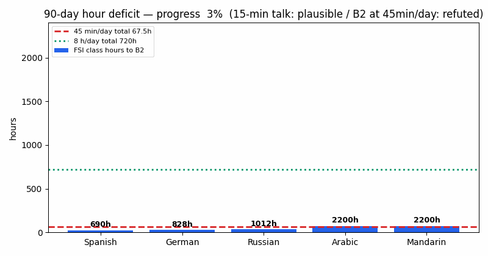

🌍 Language-Hacking Verification Lab · MIT · Docker-ready · Live-verified 2026-10-15
Fluent in 90 Days? Here Is What the Data Actually Says.
CEO summary in 30 seconds: a 15-minute conversation in 90 days is realistic for a motivated beginner (A1–A2 level). Full fluency (B2) in 90 days at 45 minutes a day is mathematically impossible — you would need 8–32× more hours. At 8 hours a day it works for easy languages like Spanish, still not for hard ones like Japanese. This page lets you verify every number yourself with 6 small experiments, then teaches you the method from zero to professional with an interactive quiz.
🎓 Take the 10-question quiz 🚀 Run the lab in 1 command 🧮 90-day calculator
New here? Start with 🌱 Beginner guide — read this and you are a professional. You will know more than most interview candidates.
📑 Contents
🎬 Demo (60 seconds)
Watch the core result: the red dashed line is everything a 45-minutes-a-day learner studies in 90 days (67.5 hours). The blue bars are what fluency actually requires (690–2,200 hours). The gap is the finding.

45 min/day × 90 days (casual)
8 h/day × 90 days (intensive)
Spanish to B2 (class hours)
Japanese / Mandarin to B2
Regenerate it yourself: python scripts/build_demo_gif.py — deterministic, 201 KB, no external assets.
🌱 Beginner guide — read this and you are a professional
Let's work this out in a step-by-step way to be sure we have the right answer. No background needed. After this section you will know more than most interview candidates.
Step 1 — What do “fluent” and “A1–C2” mean?
Languages are graded A1 (first words) → A2 (simple chats) → B1 (independent) → B2 (fluent work use) → C1/C2 (advanced). The U.S. Foreign Service Institute trains diplomats full-time and records exactly how many class hours each language takes to reach B2: Spanish/French ≈ 690 h, German ≈ 828 h, Russian ≈ 1,012 h, Arabic/Chinese/Japanese/Korean ≈ 2,200 h. Apps at home take about 1.5–2× longer than small diplomat classes.
Step 2 — Do the 90-day math yourself
90 days × 45 minutes = 67.5 hours. Compare: 67.5 ÷ 690 ≈ 9.8% of Spanish B2; 67.5 ÷ 2200 ≈ 3.1% of Japanese B2. That is why the honest target at 45 min/day is a 15-minute A1–A2 conversation, not fluency. At 8 hours/day (720 h) Spanish B2 fits (104%), Japanese still does not (33%). Hours first, motivation second.
Step 3 — Why “1,000 words = 80%” is half true
The 1,000 most common words cover roughly 70–81% of word tokens you hear (our recomputation: 71.4% at standard settings, 81.1% for steep spoken counts). But the missing 20–30% are the keywords that carry meaning. So 1,000 words help you follow a conversation, not understand every detail. Learn frequent words first, then the keywords for your life.
Step 4 — Memory: small reviews beat cramming
Reviewing a word on days 0-1-3-7-14 beats studying it five times on day one. Use those wasted 2-minute waits (bus, queue, kettle) for flashcards. Make your own cards with sound + picture, and reveal the picture after you guess. Flashcards build recognition; speaking practice builds speaking — you need both.
Step 5 — Speak early, but with feedback
From week one, say your study sentences out loud and try a few of your own. Most hours should still be listening/reading. Once you can hold a short exchange, get a partner who corrects you — that correction step is what turns mistakes into progress. Speaking alone early helps later speaking; listening alone early helps early understanding. Do both.
Step 6 — Free vocabulary (Romance languages) vs hard languages
English already shares thousands of words with French/Spanish/Italian (action, nation, communication). Our 32-word audit: 81% look similar in French, 66% in Spanish. Watch out for rare false friends (computer ≠ ordinateur). For Arabic/Chinese/Japanese, expect only a handful of loanwords — budget the full 2,200 hours.
Step 7 — You do not need to travel
Immersion = hours × real interactions, not plane tickets. Switch your phone, apps and shows to the language, and talk daily online. Learners who pick hard languages actually stick around 14% more — motivation matters most.
Interview-ready one-liner: “90-day fluency fails on hours (67.5 h vs 690–2,200 h FSI); 90-day conversation succeeds as A1–A2 with output-plus-feedback, spaced retrieval, and frequency-first vocabulary — verified by 6 recomputable experiments.”
🧮 90-day calculator — will your plan work?
Pick a language and your daily minutes. The math uses the same public FSI table as the lab (data/fsi_hours.csv).
📊 Findings in one table
| Claim tested | Result | Number to remember |
|---|---|---|
| 67.5 h reaches B2 | ❌ Refuted | 9.8% of Spanish B2; 3.1% of Japanese B2 |
| 720 h (8 h/day) reaches B2 | ⚠️ Only easy languages | 104% Spanish; 33% Japanese |
| 1,000 words ≈ 80% coverage | ⚠️ Tokens yes, understanding no | 71.4% tokens (standard); keywords missing |
| Spaced beats massed | ✅ Direction confirmed | delayed effect g=0.80; schedule 0-1-3-7-14 |
| You already know thousands of words | ✅ Romance only | FR 81%, ES 66%; hard languages: loanwords only |
| Speak from day one always best | ⚠️ Best for speaking at 60 days, worst for understanding at 7 days | production 0.90 vs comprehension 0.55 early |
| You must travel | ❌ Geography refuted | network × hours predicts gains; hard-language retention +14% |
| 6 missions delivered fluency | ❌ 0/6 fluent, 1 partial | honest target now: 15-min conversation |
🎓 Interactive quiz — from scratch to pro (10 questions)
Answer all 10. Each answer explains why, so you learn even when you miss. 8+/10 = professional. Your score is saved in this browser.
✨ Features
| Feature | What it does |
|---|---|
| 🧮 90-day hour calculator | Tell it your language + minutes/day; it tells you if B2 or conversation is plausible (this page + EXP01). |
| 📊 FSI hour table (25 languages) | Exact class hours + daily needs for 90 days, class and app-adjusted (data/fsi_hours.csv). |
| 🔤 Zipf coverage checker | Shows why 1,000 words help but do not equal understanding (EXP02 + chart). |
| 🗓️ Spaced-repetition simulator | Forgetting-curve demo + 0-1-3-7-14 schedule you can copy (EXP03). |
| 🔗 Cognate scanner logic | 32-word Romance sample + similarity rule you can extend to your language (EXP04). |
| 🗣️ Output-vs-input planner | Week-by-week mix that maximizes speaking without losing understanding (EXP05). |
| 🎓 Scratch-to-pro quiz | 10 questions with explanations; 8+/10 means you can defend the method in an interview. |
| 🐳 One-command reproduction | docker compose up --build reruns all 6 experiments offline-safely. |
👥 Who this is for (user stories)
- Self-learner (Spanish in 90 days): run the calculator, pick the 15-minute-conversation target, copy the 0-1-3-7-14 card schedule, book a correcting partner from week 2.
- Busy professional (20 min/day, Japanese): see why B2 is out of range, set an A1 kanji + daily-phrase goal instead, use waiting-time reviews.
- Teacher / coach: use the hour table to set honest goals, the quiz as homework, and the output grid to split class time (input early, pushed output later).
- Researcher / student: rerun
make run && make test, cite the 7-gate snapshot, extend with the pre-registered 4-arm RCT in the README. - Job candidate: finish the Beginner guide + quiz, then quote the one-liner: hours first, output-with-feedback, frequency-first vocabulary.
🚀 Quick start
Option A — Docker (recommended):
docker compose up --build # writes results/*.json + *.png, runs all 6 experiments
Option B — Local Python 3.11:
pip install -r requirements.txt python -m experiments.run_all python -m pytest tests/ -q # must show 7 passed
Regenerate this page's GIF: python scripts/build_demo_gif.py (201 KB, deterministic).
📋 The verified 90-day protocol (copy this)
- Define the target as CEFR + minutes (“A2 15-minute social conversation”), write it down publicly.
- Budget from FSI × 1.5–2, not motivation. Casual pace → conversation goal; B2 needs full-time hours.
- Week 1: phrasebook + connectors + simple sentences; say everything aloud; add 2–3 own sentences/day; most hours still input.
- Flashcards in 2-minute gaps, own cards, sound + picture, picture-after-guess, schedule 0-1-3-7-14.
- Romance: harvest -tion/-sion/-tude + tech words; hard languages: expect loanwords only + full hours.
- From week 2: partner who corrects you; track speaking and understanding separately.
- Time-box extras (e.g., Esperanto-first); never subtract them from hour budgets.
- Stuck 2 weeks? Change one variable (input share, partner, deck source, task) and re-measure.
❓ FAQ
Is “fluent in 3 months” a scam?
Neither miracle nor scam: the name overpromises B2, but the method core (goals, output with feedback, spaced retrieval, immersion as hours) is supported. Use the honest target: 15-minute conversation.
What level is a 15-minute conversation?
Roughly A1–A2: introductions, daily needs, simple stories with mistakes — exactly what 67.5 focused hours can build.
Does Anki alone make me fluent?
No. Flashcards build recognition fast; speaking needs corrected speaking hours. Budget both.
Should I start with Esperanto for two weeks?
Evidence is thin (one small child study). Time-box it if you try it; do not count it toward your target-language hours.
How do I cite this lab?
Language-Hacking Verification Lab (2026). v1.0.0, results recomputed — see results/summary.json. MIT code, CC-BY-4.0 text.
🌐 How this page is published (GitHub Pages)
This file (preview.html) and its copy at docs/index.html are the same single-file site (no build, no secrets, works offline). To publish:
- Push this repo to GitHub.
- Open Settings → Pages.
- Under Build and deployment → Source choose Deploy from a branch.
- Set Branch to main and Folder to /docs, click Save.
- Wait 1–3 minutes, refresh, click Visit site — your URL looks like
https://YOURNAME.github.io/language-hacking-verification-2026/.
Why /docs? Branch deployment serves ready-made HTML directly — no build step needed. The .nojekyll file disables Jekyll so the GIF, quiz and calculator serve exactly as committed.